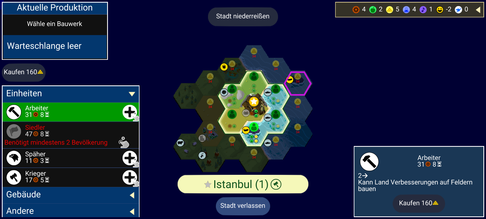
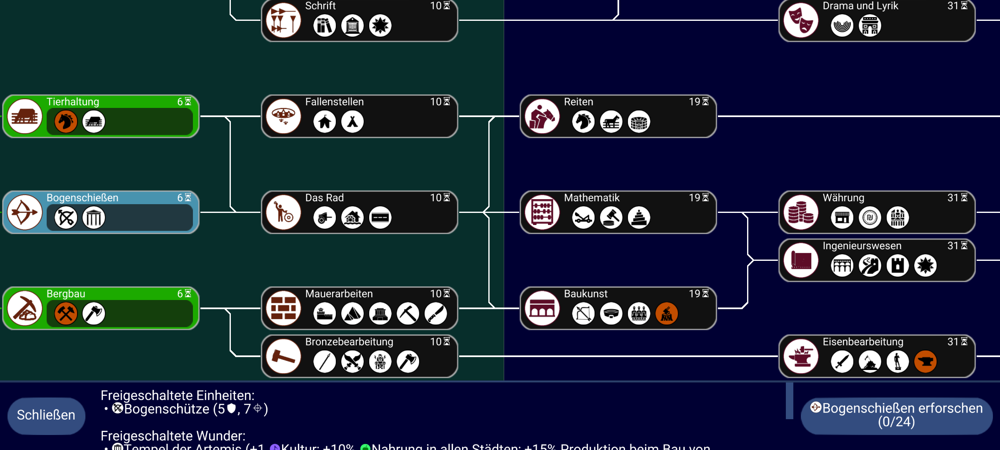
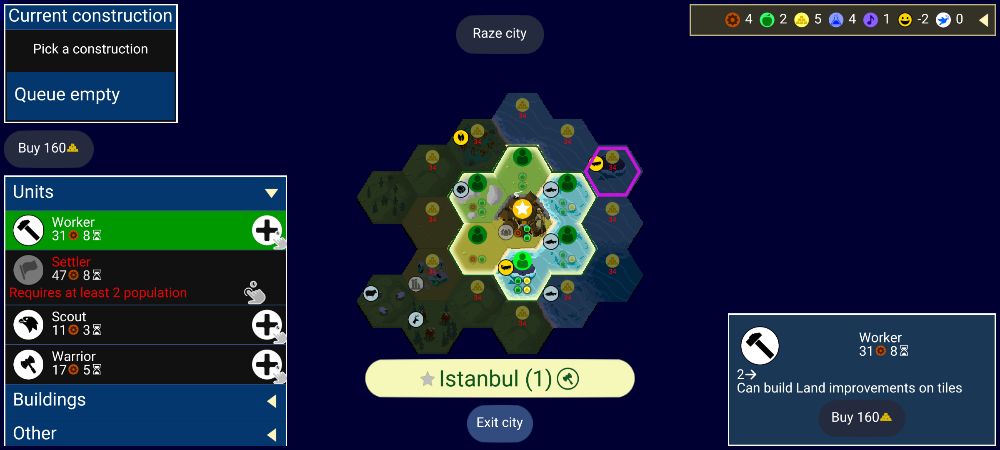
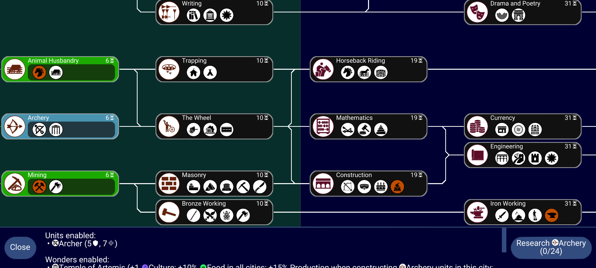

Exploration only. No labels, ground truth or evaluation data. These controls have no injected translation mutation; this is not a human clean-label declaration.

b26abc6f7646666460edb51309a220a1d3dd8fdd01476d103bda2bb8929cb368
37789ea25484d22c3b14f97dba3520c3fbd5dd87667ba5db9e1ba3daaf6ee4f0
afc99e09d8d7d955b8acd7ad1ef74bd26710a8b60bd6e0b233b66b60493045fb
d225bc7d71de675dd621a5e6cdfb6bd2e7e92c383c16bcd2ccdfa000190b2c56